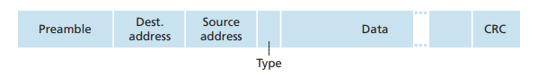
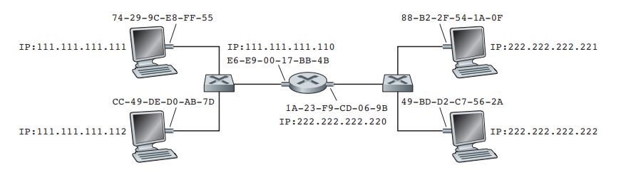
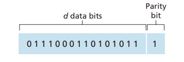
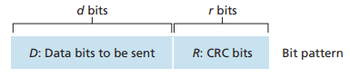
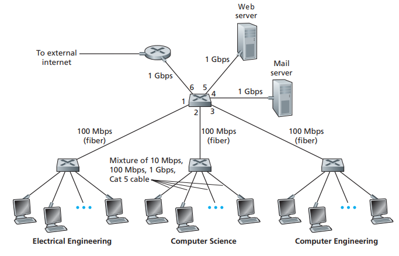
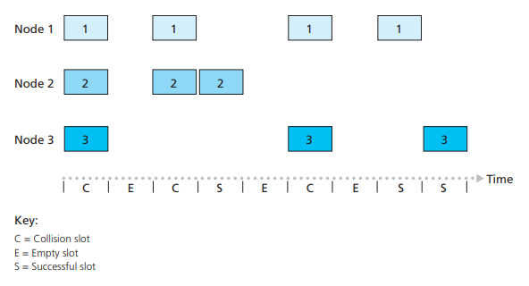
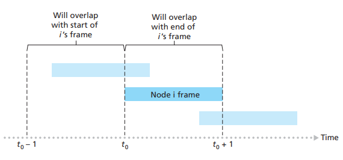

前言
数据链路层，负责网络上，两个节点之间的数据帧通信，是最贴近硬件的一层。掌握数据链路层的知识，对我们理解网络中的一些现象具有极大的意义。这篇Blog，首先会介绍数据链路层的作用，以及基本结构和基本运作流程；紧随其后，我们将探讨数据链路层的转发设备，以及不同的设备构建的局部网络，数据帧传输的基本运作流程；最后我们将介绍在广播Channel中使用的链路层协议（Multi-Access Protocol）。本文的知识和观点主要来自于《Computer Networking A Top-Down Approach》一书，本Blog也将会大量引用该书的图文。
本Blog的主要功能是对数据链路层知识进行梳理，而非对Top-Down中Link-Layer这一章节的翻译，而是经过自己的梳理而写的文章。最后由于本人水平有限，如有不当的地方，欢迎大家批评指正，大家可以将建议或者意见发到我的邮箱中1518986465@qq.com。
数据链路层的作用
数据链路层的主要职责是，将数据帧从网络上的一个节点（节点可以是路由器或者主机）发送往相邻的另一个节点。为了完成这这一任务，链路层会主要经过将IP数据包封装成帧（framing）、通过MAC地址选择合适链路传输数据包（link access）和错误检测（error-dection）三个步骤，下面我们分别一一进行介绍。
Framing
在IP层数据包下传到链路层后，在将数据包转给物理层发送之前，链路层需要对IP数据包进行封装成数据帧以后，再转发。在封装成数据帧的时候，会以IP数据包作为Data域，然后为其添加数据帧首部，不同的物理网络会转发不同格式的数据帧，这些不同的格式的存在，目的是让数据帧能够在不同媒介的物理网络中传输，有些链路层数据帧格式甚至会在封装数据帧时，为数据帧添加尾部。图1展示了以太网用的链路层数据帧格式[1]：
图1
如图1所示，Preamble、Dest address、Source address和Type是链路层数据帧的首部，而Data域则是网络层下传的IP数据包，最后的CRC尾部，则是通过循环冗余算法计算出来的，用于检测数据帧是否失真的校验值。在以太网中，这些首部、数据和尾部字段代表的含义如下所示：
- Preamble：数据帧序文，共8个字节，前7个字节的值必定是10101010；最后一个字节的值为10101011，被称之为SFD(Starting Frame Delimiter)；序文的作用是用来唤醒接收方网络适配器，并且同步发送端的时钟频率，使得接收方和发送方的时钟频率保持一致，如果两端时钟频率不一致，将可能丢失数据bit；而SFD则是告知接收方，该Byte之后的数据，是需要正式处理的数据。
- Dest address：接收方的MAC地址
- Source address：发送方的MAC地址
- Type：我们的网络层协议，并不止一种，这个Type的作用，就是告知接收方，数据帧的payload（即data域）应该交给哪种网络层协议来解析（如Novell IPX或者AppleTalk），该域类似IP层的protocol域用于指定IP层的payload应该交给哪个运输层协议来处理（TCP或UDP）。
- CRC：通过循环冗余算法，计算出来的校验值，用于检测数据帧是否因为受到干扰而失真。
将IP层数据包，封装成数据帧，是数据包能够顺利从一个节点，发往相邻的另一个节点的第一步。数据帧中的每一个部分都有其特殊的用途，都是为了解决某些问题而存在的，如preamble是为了唤醒接收方，以及保证接收方和发送方时钟频率一致，使得接收方不会在处理帧过程中，丢失某些bit位，导致数据帧在接收端处理阶段错误处理导致帧不可用。而Dest address，则是决定帧应该从哪个接口输出，此外在广播链路中，数据帧的传输时通过广播进行的，这样每个处于该网络的host都会收到数据帧，此时需要通过自己的MAC地址和收到的帧的MAC地址做匹配，匹配了才进行处理否则丢弃。Type则选择合适的网络层协议解析payload。CRC则是用来判断接收的帧是否被干扰过。
数据链路层的作用是，让两个相邻节点的数据帧，能够顺利传输，不过数据帧能够从一个节点，传输到另一个节点的传输过程，还仍然是由具体的物理链路完成的，不同的物理链路，会有不同的传输方式，因此它们对数据帧格式的要求也有不同的地方。虽然在不同的物理网络中，我们的数据帧格式不尽相同，但是它们在封装为帧以后，所进行的link access流程是大致相同的。后面我们将探讨数据帧转发的具体流程，以及错误检测的几种算法。
Link Access
上节，我们介绍了数据帧的结构，本节我们将探讨数据帧，在网络中的具体传输流程。我在数据包在网络层中的传输一文中，详细探讨了网络层的基本运作流程。当我们的路由器接收到一个IP数据包时，要根据该数据包的目标IP地址，找到合适的路由器接口转发出去。然而这一个过程是怎样的流程，首先我们要探讨一下MAC地址，MAC地址是什么，它在链路层数据帧转发扮演什么样的作用？IP地址和MAC地址的关系是什么，它们之间又是怎样转换的？接下来我们将一一进行探讨。
在网络中，不论是路由器还是我们的主机，要连接网络，都必须安装网络适配器，而每个网络适配器的每个网络接口，都有一个唯一的不可变动的地址[2]，这个地址被称之为MAC地址（虽然现在有软件可以更改适配器的MAC地址，现实生活中，我们要这么做的机会很少，这里不考虑这种情况），MAC地址是一个48位，由6个字节组成的地址，它一般以两个十六进制位为一组，分6组组合而成，如：62-FE-F7-11-89-A3。如果我们希望将一个数据包，传输到下一跳路由器，或者直接交付给主机，那么我们需要先获得下一跳路由器或主机的MAC地址。由于我们的IP层数据包，最终要经过链路层进行转发，而链路层的数据帧，如果不能获取目标的MAC地址，那么就无法将数据帧交付给下一跳路由器或者主机（后面会解释为什么转发过程必须要用到MAC地址），因此，我们需要一种方式，将IP地址转换为MAC地址，为了完成这种转换，我们一般使用ARP协议来实现。
ARP协议（Address Resolution Protocol），是获取局域网中，绑定某个IP地址的网络接口的MAC地址。当网络层收到IP数据包的时候，会先检查IP数据包的目标IP地址，为了将数据包转发到目标地址，IP层需要找到下一跳IP地址的路由器，或者直接交付的主机IP地址，为了能在链路层进行数据帧转发，此时IP层在路由表找到IP数据包下一个要去到的IP地址后，首先会拿该IP地址，到ARP缓存中查找对应的MAC地址，如果能找到则直接返回；如果不能找到，由于每个网络接口都有自己的MAC地址和ARP Module[3]，路由器会让每一个ARP Module向与之直接相连的节点广播ARP请求包，接收到ARP请求包的节点，会解析其包含的IP地址，如果和自己的相等，则返回一个回应包，告知请求方自己的MAC地址，否则丢弃请求。请求包接收到ARP回应包以后，会将该IP和MAC地址写入ARP缓存中，同时将回应包从哪个接口接收的信息，保存在一张转发表中。现在我们以图2为例，展示ARP解析的流程：
图2
- 假设图2所示的网络的每个节点，都没有ARP缓存，现在在主机111.111.111.111要发送数据包给222.222.222.222；
- 此时发送方节点111.11.111.111发现目标地址与自己不处于同一个网络，但它知道自己的默认网关的IP地址为111.111.111.110，则此时该默认网关（路由器左边的网络接口）则为其下一跳地址；
- 此时发送方需要知道默认网关的MAC地址，于是发送方向自己的网络广播ARP请求，请求获得IP地址为111.111.111.110的网络接口的MAC地址，此时绑定IP地址为111.111.111.112和111.111.111.110的网络接口都会收到该ARP请求包；
- 当绑定IP地址为111.111.111.112的网络接口，收到请求时，因为自己的IP地址和ARP请求包内的IP地址并不相同，则丢弃该请求。而路由器左边的网络接口因为IP地址和ARP请求中的相等，于是将自己的MAC地址E6-E9-00-17-BB-4B返回给请求节点，并将请求方的MAC地址，以及请求方的请求包从左边网络接口（假设左边网络接口为0，右边网络接口为1）的对应关系写入转发表中；
- 请求方111.111.111.111收到回应包以后，则以111.111.111.110为key，以E6-E9-00-17-BB-4B为value，将他们写入自己的ARP缓存中；
- 请求方将IP数据包放入数据帧的payload域中，设置好Dest address（默认网关MAC地址）和Source address（自己的MAC地址）后，从它唯一的网络接口，将数据包发送给默认网关；
- 默认网关路由器接收到数据包以后，发现数据包的地址在另一个接口所处的网络中，于是通过ARP协议获得目标IP地址222.222.222.222的MAC地址；
- 此时，路由器如何知道，自己应该将数据包，通过接口0（左边的网络接口）还是接口1（右边的网络接口）发送出去呢？如上所示，每当有数据帧发给本节点时，其会将发送者的MAC地址，以及它从哪个接口传入的信息记录在一个转发表中，如图3所示，经过上面几个步骤的操作，路由器的转发表已经形成。发送方的数据包最终是要发给222.222.222.222这个节点的，在路由器中，在经过ARP协议解析后，路由器不但知道绑定IP地址222.222.222.222的网络接口的MAC地址是49-BD-D2-C7-56-2A，而且还知道这个节点与自己的网络接口1直接相连，于是数据包就会通过网络接口1直接发送出去，最后被目标主机接收
| Address | Interface | Time |
|---|---|---|
| 74-29-9C-E8-FF-55 | 0 | 18:33:00 |
| 49-BD-D2-C7-56-2A | 1 | 18:33:35 |
图3
通过上面的论述，我们现在应该已经很清楚MAC地址是什么，以及它的作用是什么。MAC地址非常关键，MAC地址是链路层数据帧进行转发的基础，通过它，路由器可以将其与指定的路由器接口绑定，使得路由器知道将数据帧通过哪个接口转发出去，而不是在所有的接口转发，这对提升路由器的性能非常有帮助。此外，现实中，如图2的所示的网络，主机和路由器之间还通过一个中继设备相连接，如果该中继设备是交换机，那么在上面例子中的数据帧，从路由器接口1发出后，交换机能够通过MAC地址识别目标主机与自己的哪个接口相连（交换机中也有类似于图3中的转发表），从而单点传输即可而不需要向所有的节点广播；而如果该中继设备是集线器，那么数据帧从路由器接口1发送出去后，集线器会向所有与之相连的主机广播该数据帧，也就是说主机222.222.222.222和主机222.222.222.221也会收到数据帧，此时两台主机需要判断自己的MAC地址与发送过来的是否匹配，否则丢弃，这样就保证了主机只会收到发送给自己的数据帧。归纳MAC地址的作用，其实就是MAC地址在传输过程阶段，决定链路接口的选择，在接收阶段，判断数据帧是否发给自己，最终决定是否接收。
现在还有一个比较严肃的问题，则是，既然有了IP地址，为什么还要有MAC地址呢？首先第一点是，我们的数据链路层的设计，并不只是给IP协议使用的，它为任意的网络层协议而设计（如IPX or DECnet）[4]，如果只是使用IP地址，那么其他网络层协议将无法运作。其次是，IP地址，会因为设备移动而改变，而MAC地址不会；而且如果我们只是在IP层使用IP地址的话，那么每次有数据包过来的时候，都需要上传给IP层进行处理，这样会产生一次中断。而如果我们使用MAC地址，网络接口会帮我们挡掉不是发给自己的数据帧，从而避免频繁中断，降低处理效率。
Error-dection[5]
我们的数据帧，在相邻两个节点进行传输的过程中，有一定概率会因为被干扰，而导致数据失真，所谓的数据失真就是我们的bit值，从1变为0或者从0变为1.这样的数据帧，是没有必要上传到网络层的，因为它们的数据已经出错，上传只会浪费性能。为此，数据链路层应该尽可能检查出数据帧是否有问题，并且将有问题的数据帧丢弃。现代的数据帧检查算法，一般是直接写在了网络接口的硬件里，作为硬件内部执行的程序存在。目的在于提升检查的效率。
当前，最常见的的几种数据包错误检查的方案主要有奇偶检查（Parity Checks）、校验和检查（Checksum）和循环冗余检查法（Cyclic Redundancy Check）三种。其中奇偶检查最为简单，循环冗余检查法最为复杂，错误检查，也并非只是在链路层才进行，网络层，运输层也有进行错误检查的情况。接下来我们将分别介绍这三种方法。
Parity Checks
所谓的奇偶检查法，就是在数据包的payload末尾，再加一个bit，当payload中为1的bit为奇数个时，那么该bit为1，否则为0。如图4所示：
图4
这种方法对发送方和接收方而言，都非常简单，只需要检查payload中值为1的bit位是奇数位还是偶数位，是否与Parity Bit匹配（1代表奇数位，0代表偶数位）。如果不匹配，说明数据帧在传输过程中，至少有一个bit从1转成0或者从0转成1。这种方法非常简单，但是它并不是很可靠，比如当出现两个bit的错误时，如payload变成1011000110101011时（第一个bit和第二个bit同时发生变化），那么它的Parity Bit仍然是1，接收方收到数据帧时，无法通过这种方式检测出，到底数据帧是否出现了错误。Checksum
校验和的方式也非常简单，但是比奇偶检测法要可靠一些，校验和的方式，通过将数据包，以2 bytes为单位，累加起来，得到的值按位取反后，作为checksum值，并写入数据包首部的校验和字段中。这样当接收方收到数据包时，会将数据包以2 bytes为一组，累加起来后，与checksum相加，如果值全为1，那么数据包很可能没有错误，否则一定有错误。在我们的运输层协议中（如TCP和UDP），会对全域进行校验和计算，而我们网络层IP协议，只会对IP数据包首部进行校验和计算[6]。虽然校验和的方式，比奇偶检测法可靠，但是也并不是完全没有弱点，单个错误可以很容易检查出来，但是如果出现如下这种情况，那么校验和检查法也无能为力了。假设我们的数据包二进制表示为00100100 00000000 00000100 00000000，那么以16位为一组，各组累加后的值为00101000 00000000，那么其校验和就是11010111 11111111；如果此时，第一组的第三个bit由1变为0，第二组的第三个bit由0变为1，那么他们的校验和仍然是11010111 11111111，接收方在进行校验和检查时，则无法判别这种情况下是否出现了。尽管校验和仍然有自身无法克服的问题，但是，相比于奇偶检查，任意两个bit发生变化，校验值不会发生变化相比，校验和的方式，不同组的相同位置的bit同时发生变化，才会导致无法检测出来，这种概率要比前者小得多。网络中，并不是要使得所有的发生bit-error的数据包都被检查出来，而是只要将bit-error不能检查出来的概率控制在一定程度下即可，因此，checksum的方法在网络层和运输层被广泛使用。CRC
CRC算法，是一种检查数据帧是否出错更为精密的一种算法，它一般直接写入网络适配器中，通过硬件直接来计算。要采用CRC算法，假设我们确定数据域为D bit位，CRC值为r bit位，那么发送端和接收端，都要拥有一个用于CRC计算的相同的r+1 bit位的值，并且该值最左边的一位必须为1，这个值我们称之为Generator。发送端需要在尾部补上r个0，然后再和Generator进行xor运算，得出的CRC值。最后在数据域尾部加上这个CRC值后（如图5所示）发送给接收方。接收方在收到数据帧以后，将收到的数据域和CRC值，一并和Generator做xor运算，如果为0，则数据帧没有发生错误，如果不为0，则数据帧一定有问题。
图5
通过上面的描述，我们大致还是没有明白CRC到底是怎么个算法，这里将通过一个例子进行详细说明。
我们首先说明一下什么是xor运算，所谓xor运算即是异或运算，即1 xor 0 = 1, 0 xor 1 = 1，1 xor 1 = 0，0 xor 0 = 0；也就是说，相同的值xor为0，不同的值xor运算后为1
现在我们假设r为3位，d为101110，且Generator为1001，现在我们来看看发送端的运算流程：- 为d尾部加3个0，则101110 000,设此值为D
进行D xor Generator运算，其过程为：
101110000 1001 --------- 001010 1001 --------- 001100 1001 --------- 01010 1001 --------- 0011这里，我们计算得到CRC值为011。通过观察上面的过程，我们可以发现，每一次进行xor运算的时候，Generator并不是简单得向右移动1位，而是要保持Generator的首位bit 1，和每一个计算结果的首个bit为1的值对齐。如上所示，当我们xor运算得到的值，得到的0值和d的最后一位对齐时，计算结束。与添加域对齐的3个bit就是最终的CRC值。发送端会将数据域d 101110加上尾部的CRC值011一起发送到接收方。
接收方收到数据域和CRC值以后，将他们一并和Generator进行xor运算，其运算过程如下所示：
101110011 1001 --------- 001010 1001 --------- 001101 1001 --------- 01001 1001 --------- 0000计算得到的值为0，说明该数据帧没有发生bit-error。和奇偶检查和校验和检查不同，CRC不仅可以检测到一个bit-error，它甚至可以检测到多个同时发生的bit-error，因为任何一个bit发生变化，那么在进行xor运算的过程中，某个步骤的值就一定会发生变化，导致最终的结果不符合预期，CRC检查，是检测数据帧是否有错误的，最卓见成效的方法。更多关于CRC的实现细节，可以参照Understanding and implementing CRC (Cyclic Redundancy Check) calculation一文。
集线器、交换机和路由器
上一节我们详细谈论了数据帧的传输流程，我们的网络由路由器、集线器和交换机组合而成。在我们的核心网络中，更多的是路由器之间的联结，而在更小的局部网络（如我们的办公网络），会更多得使用到集线器和交换机（如图6所示）。现在我们将依照图6的情况，假设连接路由器、Web Server、Mail Server和底下三个中继设备的设备为交换机，而底下三个连接主机的设备为集线器。现在我们通过此图来讨论集线器、交换机和路由器的异同。
图6
当我们的局部网络（如办公网络中）有大量的机器，并且公司只有少数几个IP可以供这些机器使用时，采用拥有大量接口连接这些主机的路由器，显得既不经济，也没必要。因此我们只需要使用集线器和交换机将这些机器连接起来，再将集线器或者交换机和路由器连接，这样我们大量的局域网主机，就能够共享一台路由器，从而共享有限个数的公网IP。集线器是用来和交换机比较最多的设备。当数据帧要经过集线器发往连接集线器的主机时，集线器将采用广播的方式，也就是说连接集线器的所有设备都会收到数据帧[7]。在这种广播Channel中，由于所有的主机都会收到发送而来的数据帧，因此需要检查数据帧的Dest address，如果不是自己的就丢弃，否则上传给网络层。因为集线器采用广播Channel，因此当不同的主机，要发送数据帧的时候，因为Channel是共享的，当两台不同的主机同时发送数据帧时，就有可能发生碰撞，因为接收设备无法区分数据bit是谁发过来的，为了解决这个问题，我们需要一种控制协议来保证每个数据帧能够独立传输，这也是我们下一节要讨论的问题。
交换机与集线器不同的地方是，每台和交换机连接的设备，都可以视为是一个独立的Channel，也就是说，这些连接交换机的设备，一旦发送数据帧给交换机时，交换机就会记录他们的MAC地址和连接的接口，并记录在转发表中。当数据帧从路由器或者其他地方传输到交换机时，交换机首先会检查传入的数据帧的目标MAC地址，从转发表中找到它应该从哪个接口送出，也就是说，交换机完全可以精确定位数据帧要送往哪个主机，因为它有办法知道每一台与之连接的设备是通过哪个接口连接的，直接将数据帧信号从该接口输出即可，而不用采用广播的方式。这样也就避免了数据链路层要采用多端访问控制协议，来避免数据帧碰撞的问题，能够极大提升网络传输的效率。事实上，交换机对数据帧进行转发，采用如下的方式进行：
- 接收到的数据帧，目标MAC地址不能够在转发表中找到，将数据帧向所有的接口广播数据帧（除了数据帧进入的接口），这样所有与该交换机相连的主机，都会收到该数据帧。
- 接收到的数据帧，目标MAC地址能在转发表中找到，那么将数据帧从转表中对应的接口输出，此时只有一台设备能够收到数据帧。
- 接收到的数据帧，目标MAC地址能在转发表中找到，并且对应的接口id和数据帧的输入id相等，那么该数据帧可能是个广播数据帧，此时应当忽略。
虽然，交换机会有广播数据帧的情况，但是与交换机相连的主机，在发送数据帧时，仍然是采用单播的方式，发往交换机，因此它仍然不需要Multi-Access Protocol。当这些主机发送数据帧给交换机时，交换机也会将其MAC地址和相连的接口记录在转发表中。事实上，在有线网络中，使用交换机更为安全，因为其他设备不容易收到发往其他设备的数据帧。但这也不是绝对的，交换机也有弱点，如上所述的交换机广播的情况，即转发表找不到的目标MAC地址，就采用广播的方式，因此我们可以在某台连接交换机的设备。在其他设备向交换机发送数据帧之前，不断向交换机发送不同的不存在于本网络的MAC地址，直至交换机内存耗尽，那么，发往这些设备的数据帧都将采取广播的方式，那么就有机会截获发往该局域网络的所有数据帧了。
路由器我在另一篇文章数据包在网络层中的传输一文中有详细的介绍，这里不再赘述，不过需要提到的一点则是，交换机拥有的功能，路由器也有，路由器更重要的是能够处理网络层的Forwarding和Routing。此外路由器在应对广播风暴方面也有更为完善的应对策略，对于同样的用途，使用路由器的成本要比使用交换机高。因此需要分情况，具体情况，具体分析使用哪种设备连接网络。
广播Channel下的控制协议简介
数据帧在广播Channel下的传输，当不同的节点在同一时刻发送数据帧时，就有可能发生碰撞，一旦发生碰撞，由于接受数据帧的设备无法识别单个bit是由谁发送过来的，于是就会导致任何一个发送端发送的数据帧被完整识别，为了解决这个问题，专门们设计了一些协议用于处理这种情况，我们称之为Multiple Access Control Protocols。控制协议有3大类，分别是Channel Partitioning Protocols、Random Access Protocol和Taking-Turn Protocols，这里只对这些协议做一些简单的解释。
Channel Partitioning Protocols，核心思想就是，将链路分割成N个Channel，N是该局部网络中，节点个数，这样做的好处是，每一个节点都有独立的传输管道，而不受其他节点的影响，但是它的劣势也非常明显，因为每个节点只能占用整个网络带宽的1/N。当网络中只有一个节点的时候，它依然只能使用1/N的带宽，导致大量的资源浪费，因此不适用于现代局域网。
Random Access Protocol，随机访问协议的思想，就显得非常简单，目前最受欢迎的主要有两种，其中一种则是Sloted Aloha算法，这种算法，将时间片分成若干块（如图7所示），
图7
每个时间块刚好能够发送完一个数据帧，每个节点只能在时间块开始那一刻发送数据帧，当有数据帧发生碰撞时，则发送端全部停止发送数据帧。到下一个时间块开始时，每个节点都会按照概率P来决定是否发送数据帧，如果上次发生碰撞的节点，随机到了可以发送的概率区间，则重发上一次碰撞的数据帧，其他节点随到可发送的概率时，则发送新的数据帧；除了Sloted Aloha算法，还有一种算法被称之为CSMA/CD，与Sloted Aloha算法不同，CSMA/CD算法，没有时间块的概念，即每个节点不会遵循相同的时间片，并且起止时间都相等，并且它有可能出现图8的情况。当有数据帧要发送时，CSMA/CD不会像Sloted Aloha算法那样，数据帧要等到下一个时间片的开始时刻才发送，发送节点会立即发送数据帧，如果发生碰撞，那么立刻停止发送，并且等待一定的随机时间后，再发送数据帧，碰撞的次数越长，那么这个随机的时间长度也越长，直至数据帧能够正常发送。
图8
Taking-Turn Protocol，所有的节点连接成一个环，该环只有一个节点能够持有一个token，从第一个节点开始，当它有数据帧要发送时，则持有token，直至数据帧发送完，尔后才能将token发送给下一个节点，如果没有数据帧要发送，则直接将token传给下一个节点。如此不断循环，这种协议一般在令牌环网中进行，它的好处是，每次进行数据帧传输，都不可能发生碰撞，坏处是当一个节点出现故障，那么整个环都不能继续运行下去。
结束语
本篇文章，我们介绍了数据链路层的作用，运作流程，以及其在运作过程终于到的问题和解决这些问题的方法。我们的路由器在收到一个IP数据包以后，需要通过路由表，找到下一跳节点的IP地址，然后通过ARP协议获得该地址所对应的MAC地址，然后将IP数据包，根据其要经过的物理链路，按特定的格式分装成数据帧，然后根据目标节点的MAC地址，在转发表中找到数据帧应该输出的接口，最终将数据帧从该接口传输出去。如果目标节点所处的网络由集线器连接是广播链路，那么该网络所处的所有节点，都会收到该数据帧，此时每个节点都要判断数据帧的目标MAC地址，如果是发给自己的，则上传给IP层处理，否则丢弃。如果目标节点所处的网络由交换机连接，那么交换机会在自己的转发表中，查找目标MAC地址对应的接口，最终数据帧从该接口传输出去，目标节点必定和某个交换机的接口直接相连，此时最终只有一个节点，即目标节点能够收到数据帧。两个节点之间的连接，是由不同的物理链路连接而成，这些物理链路种类繁多，为了支持数据帧最终能够传输，链路层要将数据帧以不同的格式封装成帧，但是无论数据帧的格式如何，在链路层数据帧的传输流程基本上都是一样的。
到此为止，我们对数据链路层的讨论也结束了，在进行多次修改以后，以目前版本作为最终版发布，对于这篇文章我已经尽最大努力，将内容阐述清楚，也由于本人水平有限，难免有不足的地方，大家也可以通过开头展示的邮箱联系我，感谢你们的阅读。
Reference
[1] [Computer Networking A Top-Down Approach; 5.4.2 Ethernet]
[2] 在NI产品上使用多个网络接口 “制造商必须给以太网适配器的每个端口分配一个独一无二的地址，这个地址被称为MAC地址。” “计算机的每个网络接口都有一个唯一的MAC地址。 如一台计算机上有多个网络接口，那每个网络接口都有其唯一的MAC地址。”
[3] [Computer Networking A Top-Down Approach; 5.4 Switched Local Area Networks；Section：Sending a Datagram off the Subnet] “There are several interesting things to note about Figure 5.19. Each host has exactly one IP address and one adapter. But, as discussed in Chapter 4, a router has an IP address for each of its interfaces. For each router interface there is also an ARP
module (in the router) and an adapter. Because the router in Figure 5.19 has two interfaces, it has two IP addresses, two ARP modules, and two adapters. Of course, each adapter in the network has its own MAC address”
[4] [Computer Networking A Top-Down Approach; 5.4 Switched Local Area Networks；PRINCIPLES IN PRACTICE:KEEPING THE LAYERS INDEPENDENT]
[5] [Computer Networking A Top-Down Approach; 5.2 Error-Detection and -Correction Techniques]
[6] [Computer Networking A Top-Down Approach; 5.2 Error-Detection and -Correction Techniques; Section:Checksumming Methods]“In the TCP and UDP protocols,the Internet checksum is computed over all fields (header and data fields included). In IP the checksum is computed over the IP header (since the UDP or TCP segment has its own checksum)”
[7] The Difference Between a Router, Switch and Hub “In a hub, a frame is passed along or “broadcast” to every one of its ports. It doesn’t matter that the frame is only destined for one port. The hub has no way of distinguishing which port a frame should be sent to. Passing it along to every port ensures that it will reach its intended destination. This places a lot of traffic on the network and can lead to poor network response times.”